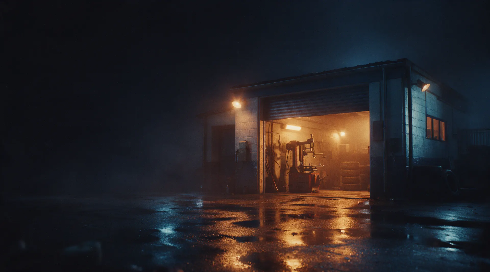
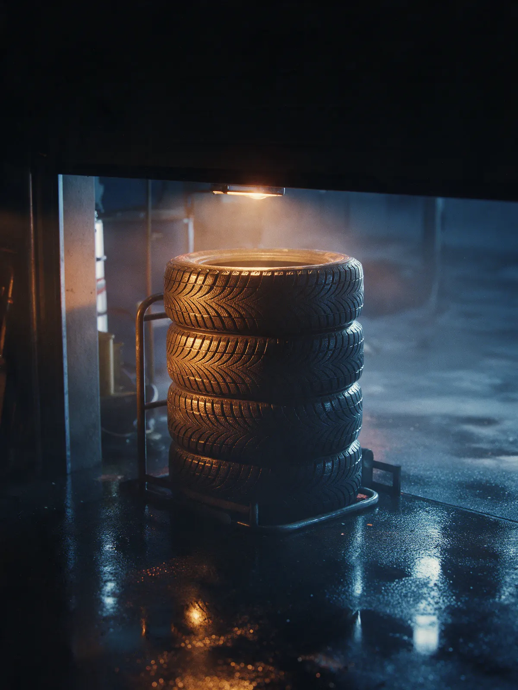
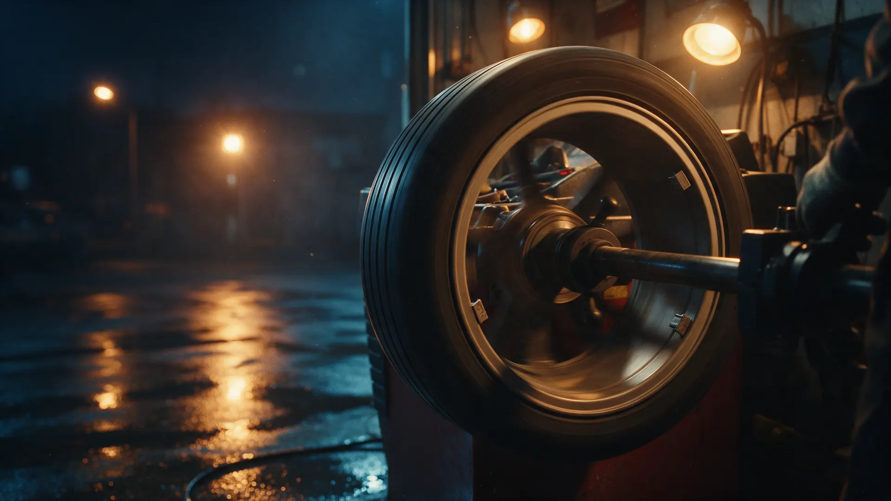
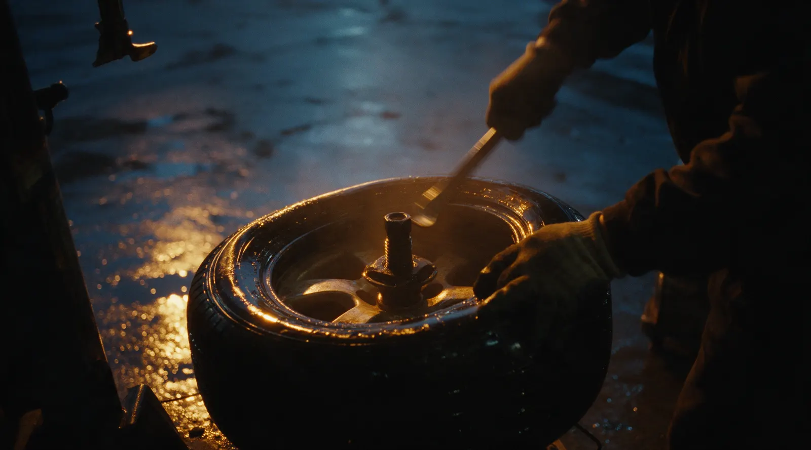

Шиномонтаж · Пенза, Луначарского, 84
Круглосуточный шиномонтаж в Пензе – запись с телефона
Луначарского, 84. Легковые и грузовые, ремонт, переобувка и хранение шин – выберите время, и заявка уйдёт в WhatsApp.
- Открыты круглосуточно, без выходных
- Легковые, грузовые и спецтехника
- Хранение шин и выездной шиномонтаж

Цены
Переобуть все колёса – от 1000 до 3500 ₽, точная сумма зависит от машины и радиуса. Остальное уточним при записи.
Шиномонтаж
- Перебортировка 4-х колёс1 000 ₽
- Переобуть все колёсапо машине и радиусу, до 3500 ₽от 1 000 ₽
- Ремонт проколауточнить
- Балансировкауточнить
- Дошиповкауточнить
Ещё
- Грузовой шиномонтажуточнить
- Выездной шиномонтажуточнить
- Хранение шинуточнить
Как проходит
- 01
Выбираете услугу и время
Заявка уходит сообщением в WhatsApp.
- 02
Приезжаете на Луначарского, 84
Открыты круглосуточно, без выходных.
- 03
Смотрим колёса и объясняем, что с ними
Мастер покажет, что нашёл.
- 04
Забираете машину
Сезонный комплект можно оставить у нас на хранение.



Что у нас есть
Круглосуточно, каждый день
Пробили колесо ночью – есть куда ехать.
Легковые, грузовые и спецтехника
Корейские, японские, европейские, китайские и коммерческие машины.
Хранение шин
Оставьте сезонный комплект до следующей переобувки.
Выездной шиномонтаж
Если машина не на ходу, приедем к ней.
Отзывы с Яндекс.Карт
«Все работает ! Сегодня были переобували две машины! Даже ребенку дали колеса покрутить! Благодарю мастера Станислава за быструю работу и всех мастеров! Ездим всей семьей уже почти 20 лет туда! Любые проблемы решают,а еще оставляем всегда резину на хранение !»
Лидия Барсукова · 30 марта
«четкий шиномонтаж , пацаны все показали рассказали дополнительно , сделали бесплатно диагностику , всем рекомендую, мне понравилось, дали гарантию 5 лет»
Кирилл · 26 июля 2025
«Хороший шиномонтаж, быстро переобули машину на лето. Работники все вежливые, аккуратные и с чувством юмора. Особенно мастер Станислав🤝»
Катя Федюкова · 10 апреля
Отзывы с карточки на Яндекс.Картах, без правок.
Частые вопросы
Вы правда работаете ночью?
Да, шиномонтаж открыт круглосуточно и без выходных.
Сколько стоит переобуть все колёса?
От 1000 до 3500 ₽ – зависит от машины и радиуса колёс.
Берёте грузовые машины?
Да, есть грузовой шиномонтаж. Цену назовём по машине.
Можно оставить шины на хранение?
Да, сезонный комплект можно оставить у нас.
Запишитесь на своё время – открыты круглосуточно
- Адрес
- Луначарского, 84, Пенза
- Часы
- Круглосуточно, без выходных
- Телефон
- +7 (927) 099-97-71